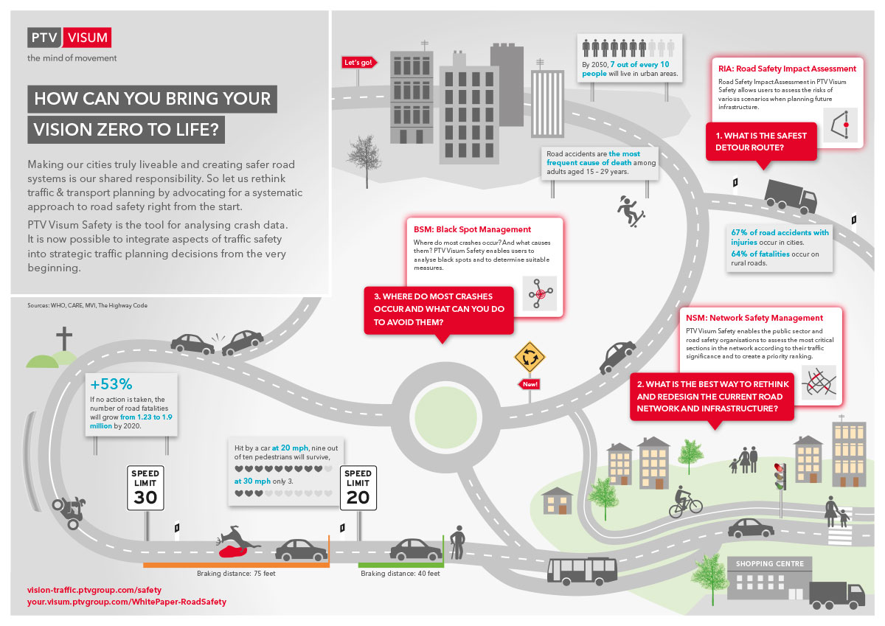

    <div id="vsebina">
    <div class="panel col-xs-12 col-sm-9 ">      
                
           
               <div class="paragraph collapse in col-xs-12 col-sm-8" id="visumSafety"> 
                <h1 class="glavniNaslov">PTV Visum Safety</h1> 
                <h3>Povećajte sigurnost u prometu uz PTV VISUM SAFETY</h3>    
                <p class="bodytext">S 1,24 milijuna prometnih nesreća na godinu, prometne nesreće među najčešćim su uzrocima smrti diljem svijeta, prema podacima Ujedinjenih naroda (UN). Zbog toga je poboljšanje prometne sigurnosti postalo zadatak mnogih zemalja. Njihov cilj je Vision Zero – broj fatalnih prometnih nesreća dugoročno bi trebao biti reduciran do nule. <br>

                PTV Visum Safety je alat za analizu podataka prometnih nesreća. Sada je moguće integrirati aspekte prometne sigurnosti u odluke strateškog prometnog planiranja od samog početka. Software pruža jasnu vizualizaciju podataka o sudarima prikupljenih od strane policije te identificira crne točke i visoko – rizične dionice. Detaljne informacije o svakoj pojedinoj prometnoj nesreći omogućuju korisnicima pronalaženje sličnosti i doprinosećih faktora, sa ciljem donošenja zaključaka o uzrocima nesreće i razvoja, planiranja  i optimizacije učinkovitih i isplativih mjera smanjenja.  
                </p>

                <a href="/_slike/Infografik_Safety_EN.jpg" target="_blank"></a><br>
                <h3>Naša posvećenost u Europskoj povelji o sigurnosti cestovnog prometa</h3>
                <p>Europska povelja o sigurnosti cestovnog prometa koju vodi Europska komisija najveća je građanska socijalna platforma za sigurnost cestovnog prometa. Pored više od 2 300 potpisnika iz privatne i javne sfere, PTV grupa pridružila se zajednici za sigurnost prometa kako bi proaktivno implementirala mjere koje će pomoći u smanjenju broja cestovnih nesreća.</p>
                <br>
                <ul>
                  <li>Poticati i podržavati Europske udruge, škole, sveučilišta, tvrtke svih vrsta i veličina te lokalne vlasti pri djelovanju za povećanje sigurnosti cestovnog prometa u Europi</li>
                  <li>Priznati doprinose civilnog društva sigurnosti cestovnog prometa</li>
                  <li>Olakšavati doprinos civilnih društva pri stjecanju i širenju znanja o problemima sigurnosti cestovnog prometa u Europskoj uniji</li>
                  <li>Olakšavati pravi dijalog za transfer iskustva i praksi u sigurnosti cestovnog prometa na svim razinama upravljanja u Europskoj uniji</li>
                </ul>

                            
                </div>           
<!--............................................... -->
              <div class="paragraph collapse col-xs-12 col-sm-8" id="prednosti" > 
              <h1 class="podNaslov">PTV Visum Safety prednosti</h1> 
              
              <h3>Planiranje pouzdanosti za prometnu sigurnost</h3>   
               <p class="bodytext">Stvorite paradigmu promjene u prometnom planiranju uključivanjem komponente prometne sigurnosti u Vaše strateško odlučivanje od samog početka. Na temelju podataka o prometnim nesrećama, obično prikupljenih od strane policije, koji se jednostavno mogu uvesti i obraditi u PTV Visum Safety, možete provesti dugoročnu, učinkovitu strategiju za smanjenje broja prometnih nesreća na visokorizičnim dionicama i crnim točkama. Uz navedene podatke i analizu multi – modalnh odnosa sudara, možete izvesti prilagođene mjere za individualne vozače, a posebice za ranjive korisnike cesta poput biciklista i pješaka.</p> 
               
              <h3>Zajednički rad</h3><p>
               Učinite mjere prometnog planiranja učinkovitijima surađujući s organizacijama koje obično rade neovisno, poput prometne policije, uprave za ceste i prometnih planera. Kad se koristi u kombinaciji s PTV Vistad, alatom za prikupljanje i validaciju podataka o prometnim nesrećama, software za strateško prometno planiranje PTV Visum i alat za planiranje sigurnosti na cesti PTV Visum Safety su dizajnirani kako bi pružili savršeno koordiniranu procjenu i stadije planiranja koji ispunjavaju cilj sigurne i održive mobilnosti.
              </p>
              
               <h3>Razumljivost i učinkovitost</h3><p>
               Provedite analize kako bi procijenili prometnu sigurnost u Vašoj mreži u samo nekoliko koraka: uvezite podatke o prometnim nesrećama iz različitih izvora, uključujući baze podataka, MS Excel i dokumente tekstualnog oblika u Visum Safety pomoću samo jednog klika.  PTV Visum Safety zatim će vizualizirati individualne nesreće ili opasna raskrižja i visokorizične dionice uz pomoć jasnih i razumljivih toplinskih karti.  Izdvojite individualne sudare ili klastere sudara prema njihovim karakteristikama i usporedite njihov razvoj kroz različite vremenske periode. Na posljetku,  upotrijebite sofisticirane funkcije izvještavanja PTV Visum Safety kako bi generirali interaktivne statističke podatke i analizu sudara. 
              </p>
              
                <h3>Znanstveni pristup</h3><p>
                Oslonite se na software koji se temelji na desetljećima intenzivnog istraživanja, bliskoj suradnji s policijom, komisijama za nesreće, kao i s brojnim nevladinim organizacijama, uz neprestano unaprjeđivanje.  Na raspolaganju imate stabilnu analizu alata koji uvijek obuhvaća najnovije znanstvene i praktične spoznaje i postavlja nove standarde. 
               </p>
               
                <h3>Snažna podrška</h3><p>
                Postanite članom naše velike zajednice korisnika. Iskoristite vještine i posvećenost našeg tima za podršku, naših profesionalnih servisa, našu detaljnu dokumentaciju i priručnike, posvećene programe obuke i grupne sastanke korisnika, koji za vas osiguravaju visoku razinu razmjene znanja.          
                </p>

              
              </div> 

<!--............................................... -->
              <div class="paragraph collapse col-xs-12 col-sm-8" id="demoVerzija">
              <h1 class="podNaslov">Demo verzija</h1>            
               <p class="bodytext">Isprobajte demo verziju i upoznajte PTV software!</p> 
               <div id="demoVerzija">
                <a id="mail" href="form.html">DEMO VERZIJA</a>
              </div>                
              </div>   
             
 <!--............................................... -->                  
          <div class="col-xs-11 col-sm-4">
            <aside>             
              <div id="pdfji">
                <b>Dodatne inforamcije:</b>
                <div class="pdf"><a href="_ostalo/PTV-Visum-Safety_EN.pdf" target="_blank"><i class="fa fa-file-pdf-o" aria-hidden="true"></i>  PTV Visum Safety Brochure</a></div>
                 <div class="pdf"><a href="/_ostalo/PTV-Visum-Safety-in-Arezzo_EN.pdf" target="_blank"><i class="fa fa-file-pdf-o" aria-hidden="true"></i>  PTV Visum Saftey in Arezzo</a></div>                              
              </div>

              <div>
                <a id="mail" href="mailto:info@appia.si" target="_top">Kontaktirajte  nas!</a>
              </div>
              <div id="demoVerzija">
                <a id="mail" href="demo.html">Demo verzija</a>
              </div>
              <br>
              <div class="infoBox" id="distributer">                   
               <b id="kontaktDistributerjaNaslov">Kontakt distibuterja</b><br>
               <a href="http://www.appia.si/" target="_blank">Appia d.o.o </a> <br>
               telefon:+386 1 524 05 20<br>
               E: <a href="mailto:info@appia.si" target="_top">info@appia.si</a><br>
              </div>
            </aside>
          </div> 
    </div> <!--/PANEL  -->   
    </div><!--/VSEBINA  -->  